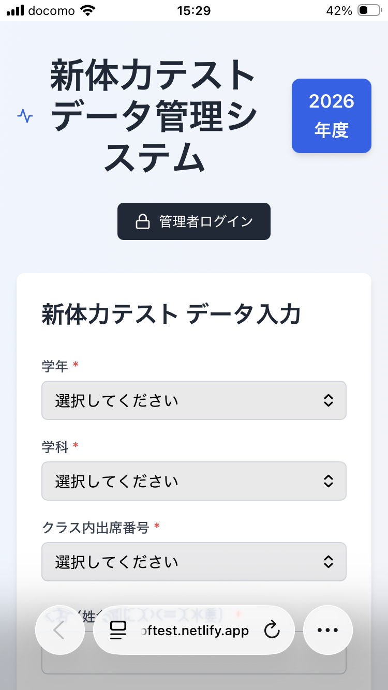
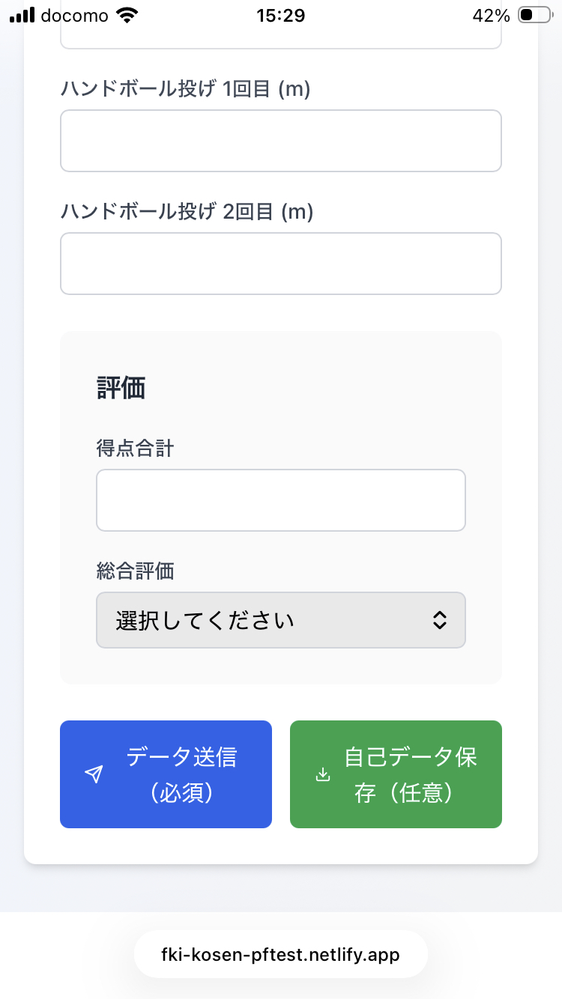

新体力テストを受けた人へ
新体力テスト項目に加え、体脂肪率のデータを以下のURLで開いた入力フォーマットにしたがって入力する。
スマホでもPCでもどちらでも入力できる。
データ入力フォームのURL
https://fki-kosen-pftest.netlify.app/
スマホで開いたときの最初の画面

新体力テスト記録用紙に記載されたデータを参照しながら、選択もしくは数字を入力する。
数字はすべて半角とする。
入力完了後の画面（データ送信ボタン）

入力が完了したら、必ず「データ送信」ボタン（青色）を押下する（右隣の「自己データ保存(任意)」はデータ送信後には動作しない）。
「自己データ保存」ボタン（緑色）で入力内容をHTML形式で保存することができる（任意）。
記録用紙のデータとの照合に使うことができる。